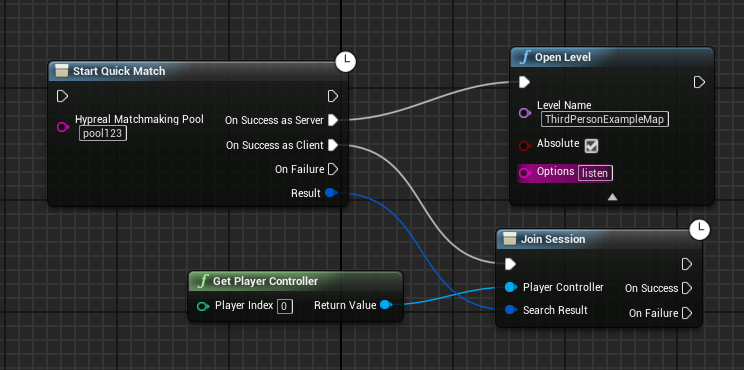

Rooms and Matchmaking¶
Users can play together through rooms and matchmaking.
NetWork¶
To provide the network communication for users in the same room or in a match , the following config should be add to the DefaultEngine.ini of project:
[/Script/Engine.GameEngine]
+NetDriverDefinitions=(DefName="GameNetDriver",DriverClassName="OnlineSubsystemHypereal.HyperealNetDriver",DriverClassNameFallback="OnlineSubsystemUtils.IpNetDriver")
[/Script/OnlineSubsystemHypereal.HyperealNetDriver]
NetConnectionClassName="OnlineSubsystemHypereal.HyperealNetConnection"
Unique Id¶
Before you use the following Unreal blueprints and Hypereal blueprints , you may need to set the Unique Id of the PlayerState, otherwise any blueprints will return false immediately.
If you do not want to do this with C++ , you can use call the Get Hypereal Identity blueprint first , and call Set Player Unique Id after the former return success.
Example:

Rooms¶
Developers can access features of rooms through Online Session Nodes in Unreal.
- Create Room The Create Session node is used to create and host a room. After the room was created , the current user's computer should become the listen server. The Public Connections is used to set the max count of users in room , and the LAN mode is never used.
Example:

- Find Room The Find Sessions node is used to get a list of rooms that are currently being joinable.
- Join Room
After the call of Find Sessions , pass one of the search resullt to the Join Session node to join room , the game will automatically travel to the server's map if it successfully connects to the server.
Example:

For more information,see Unreal's Online Session Nodes.
MatchMaking¶
Hypereal Platform currently support quick match for two users. Two Blueprints are available.
- Enqueue Quick Match
Call the Start Quick Match node , after two users are matched , the program should do corresponding call for server or client.
The pool name represents a type of game mode or a map in your game.You can create your matchmaking pool in Hypereal Developer Center.
Example: 
- Cancel Quick Match
Call the Cancel Quick Match node.

Note¶
Unreal do not use custom net driver when play game with eidtor , so you need to test multiplayer game with launching game or packaged game with two or more computer.
Known Issue¶
- Session with Lan is not supported currently.
- The Destroy Session Blueprint Node will not return result if there is no matched session.